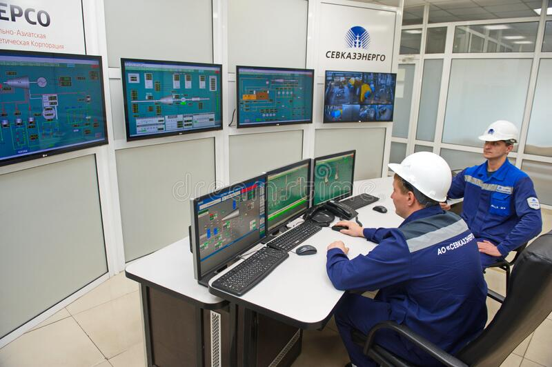
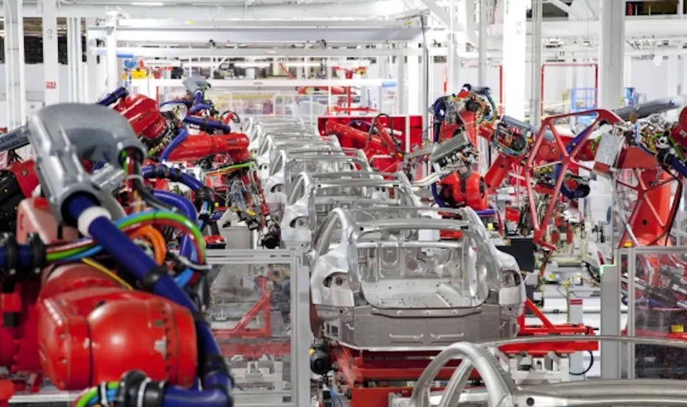
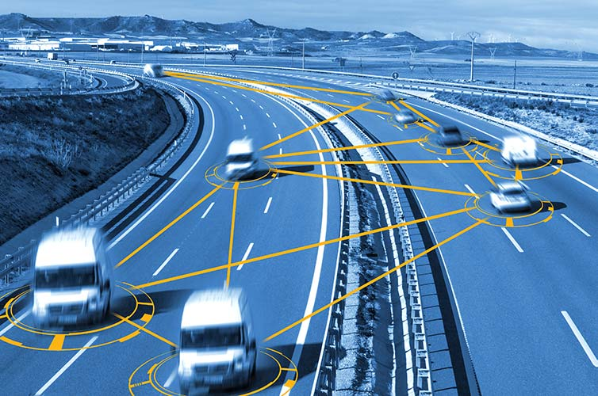

Sensor Suites: w/ Network Slicing
Network Slicing allows us to run many more functions much more efficiently as per need of scale. Monitor whole plant miniscule tolerances for pre-emptive error correction
Bots & Vehicles


- On Demand Surge. CV2X allows fleets to automatically deploy with raw material. Ex. Coal
- In Toxic & Radioactive env, bots can inspect instead of humans. Ex. Fukishima
- Boston Dynamics Spot can patrol remote & hazardous locations. Ex Illwerke Vkw, Austria
CV2X: Cellular Vehicle-to-Everything (C-V2X) is a unified connectivity platform including vehicle-to-vehicle (V2V), vehicle-to-roadside infrastructure (V2I) and vehicle-to-pedestrian (V2P) comms
Wholistic Monitoring: Grid
Smart Grids
- Intelligent Distributed Feeder Automation
- Automatic grid fault detection & isolation within ms Ex. Enel's grid, Olbia, Italy
- Remote inspection of working areas Ex. Garraf Naural Park Substation, Barcelona, Spain
- Realtime wide area monitoring & usage data Ex. Cross Border Area, North Greece & South Bulgaria with phasor measurement units connected with 5G comm link to virtual phasor data concentrator
- Millisecond-Level Precise Load Control Ex. Wind Farm, south-eastern Bulgaria